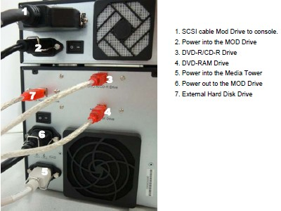
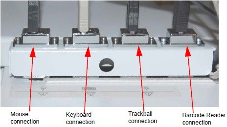
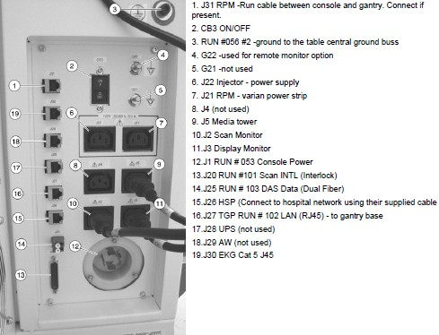
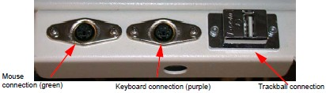
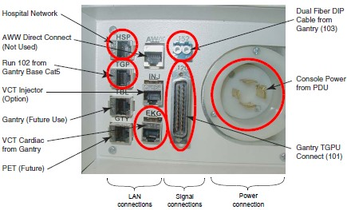

Operating Documentation
Direction 5193574-800, Rev# 22
LightSpeed 7.X Service Methods
Module Version 1.0, Version Date 4/22/10
Operating Documentation |
| Labor: | 1 person; 0.4 man-hour |
| Tools: |
Table 1: GOC6 Cable Connections
1. Install monitors and media/SCSI tower on the console desktop, with cable connections to the console. |  |
2. Install the SCIM, keyboard, trackball, and mouse with cable connections to the console rear bulkhead. |  |
3. Connect power cable (Run #53), TGPU signal cable (Run #101), ethernet cable (Run #102), fiber optic cable (Run #103), ground cable (Run #56), and network cables to the console rear bulkhead. |  |
4. Connect any Customer options cables (for example: cardiac monitor, injector). | |
5. Connect all desktop power cables and console signal cables to the console rear bulkhead. | |
6. Install drives for the console, using proper ESD precautions. | |
7. Optional MOD drive: Mount it on top of the media tower and connect the drive. | |
8. Optional VeRB computer: mount the computer to the console with network and power cable connections. | |
9. Optional USB barcode reader: connect the USB cable to port USB A on the console. |
Table 2: GOC5 Cable Connections
1. Install monitors and media/SCSI tower on the console desktop, with cable connections to the console. |  |
2. Install the SCIM, keyboard, trackball, and mouse with cable connections to the console rear bulkhead. | |
3. Connect power cable (Run # 53), TGPU signal cable (Run # 101), ethernet cable (Run # 102), fiber optic cable (Run # 103), and network cables to the console rear bulkhead. |  |
4. Connect ground cable (Run # 56) to console ground location. | |
5. Connect any Customer options cables (for example: cardiac monitor, injector). | |
6. Connect all desktop power cables and console signal cables to the console rear bulkhead. | |
7. Install drives for the console, using proper ESD precautions. | |
8. Install DASM option. | |
9. Install modem option. |